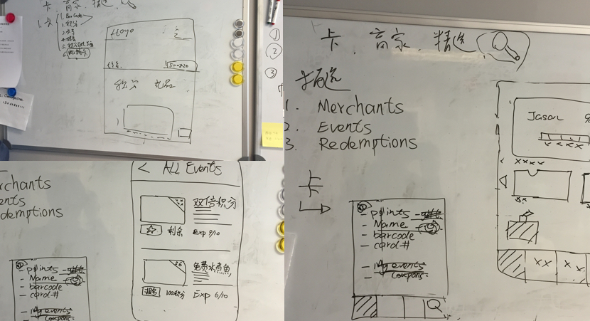
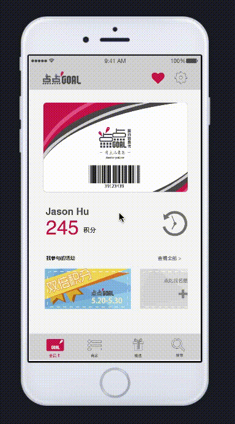
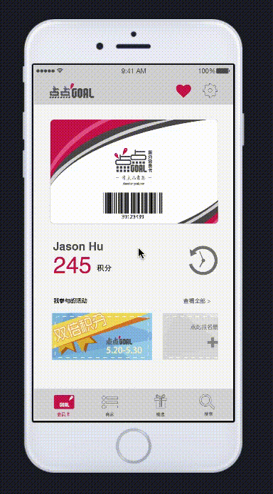
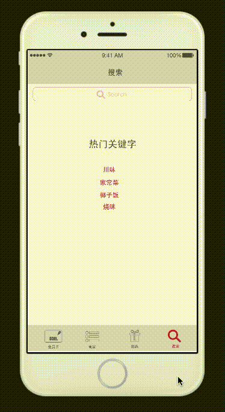
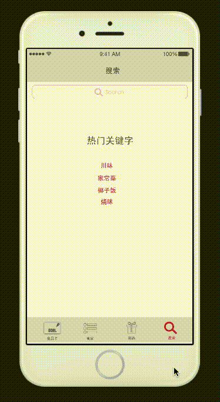

Table of Contents
DiandianGoal: Targeting The Chinese Community in GTA
Mobile, UI Design
3 min read
DiandianGoal is a mobile app developed by Fanta7 Technology providing a solution to manage multiple memberships in one place for the Chinese community in the Great Toronto Area. DiandianGoal was launched in Aug 2015, and has more than 5000 downloads until Mid 2016.
Background
Considering the inconvenience that people carrying many membership cards at the same time, Fanta7 decided to develop an app with a "virtual card", which allows users to collect points and get rewards at different locations as long as they are registered in Fanta7. Besides the main function, this app also provides rich information about events and special discounts.
I worked as a freelance UI designer for Fanta7 in 2015, responsible for the UI design of the first generation DiandianGoal app. I also participated in the initial research and ideation process.
The Process
We discussed and brainstormed together, gathering some initial ideas.
Interaction and Visual Design
 

 

Impact
The app was launched in 2015 on both App Store and Google Play. Along the last two years, DiandianGoal has updated for several times to fix bugs, but the initial structure and visual elements were still being used, which gave me confidence that my design was not only delightful and functional, but offered a good user experience.
Lauched in Late 2015
5500+ Downloads
* Due to the switch of strategy focus, DiandianGoal is no longer available online since the beginning of 2018. However, it had brought great impact and convenience to hundreds of Chinese merchants and thousands of Chinese consumers in the GTA.